Unmöglich
Gegenstand dieses Kapitels ist der widerstandslose Vortrieb von Körpern in einem Fluid, so dass z.B. ein Flugzeug praktisch ohne motorischen Antrieb vorwärts fliegt. Nach allen Regeln der Physik scheint das völlig unmöglich - aber weder Hummeln noch Forellen haben Physik studiert. Und viele andere physikalische Erscheinungen scheinen zunächst auch völlig unmöglich zu sein.
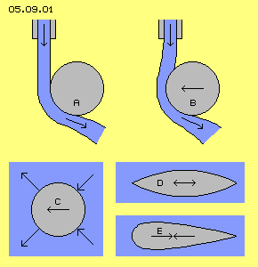
In Bild 05.09.01 bei A ist beispielsweise der ´Coanda-Effekt´ skizziert: aus einer Leitung fließt Wasser (blau) und trifft seitlich auf eine gerundete Fläche (grau) und wird umgelenkt entlang dieser Fläche - aus der Richtung seiner Gewichtskraft und bisherigen Trägheit heraus. Dieses ´Unglaubliche´ können Physiker gut erklären anhand gültiger Formeln (z.B. betreffende ´Zirkulation´), während ich diesen Effekt in vorigen Kapiteln auf Basis der normalen Molekularbewegung beschrieben habe. Eine meiner provokanten Aussagen wird hier bestätigt: Strömung hat keine zwingende Trägheit, ihre Partikel bewegen sich immer dort hin, wo Wege zwischen Kollisionen am längsten sind - auch rechtwinklig zur bisherigen Richtung einer Strömung.
In diesem Bild bei B ist der ´Magnus-Effekt´ skizziert: es wird nicht nur der Wasserstrahl unterhalb der gekrümmten Fläche abgelenkt (hier nach rechts), sondern der runde Körper in den Strahl hinein gezogen (nach links), sogar so weit dass der Wasserstrahl zuerst nach links umgelenkt wird. Die höchst erstaunliche Kraft ist leicht festzustellen, indem ein Löffel unter den Wasserhahn gehalten wird. Der atmosphärische Druck ist ein Kilogramm auf jeden Quadratzentimeter - und hier wird diese Kraft links durch den Wasserstrahl vom Löffel abgehalten (genauso wie der Wasserstrahl selbst wieder durch einen begleitenden Luftstrom geschützt wird).
Paradox
In diesem Bild bei C ist schematisch das Paradoxon-d´Alembert skizziert: ein Körper bewegt sich durch Fluid und übt damit Druck nach vorn aus. Da sich Druck umgehend in alle Richtungen gleichförmig ausbreitet, wirkt der Druck letztlich auch auf die Rückseite des Körpers mit genau gleicher Stärke (als fortgesetzter Prozess, wenn der Körper sich kontinuierlich vorwärts bewegt). Also müsste die Bewegung widerstandslos sein und der Körper verlustfrei weiter wandern, nicht nur Kugeln sondern auch strömungsgünstige Körper wie bei D skizziert. Egal ob dieses Profil sich nach links oder rechts bewegt, die Kräfte sind symmetrisch - aber ´paradoxerweise´ weist auch dieser Körper noch Widerstand auf.
Als Ursache dieses ´Fehlverhaltens´ wird genannt, dass reale Fluide keine ´ideale´ Gase sind, d.h. letztlich doch kompressibel sind, Kollisionen nicht vollkommen elastisch erfolgen, also Druck nicht verlustfrei weiter gegeben wird. Das gilt für feste Körper in Wasser oder Luft ganz gewiss - aber warum bewegen sich dann alle Atome oder Moleküle eines Gases offensichtlich verlustfrei? Als Antworten kommen nur in Frage: 1. weil sich diese Teilchen widerstandslos durch reines Nichts hindurch bewegen - wobei paradox für mich bleibt, wie irgendein Etwas an seiner äußeren Grenze sich nicht augenblicklich ´in Nichts hinein auflösen´ sollte. 2. weil ´materielle Teilchen´ sich in einem wirklich idealen Gas bewegen - und null-Kompression und null-Energie-Verlust nur gegeben sein kann in einem absolut lückenlosen Medium - wie ausführlich argumentiert in meiner Äther-Physik und -Philosophie.
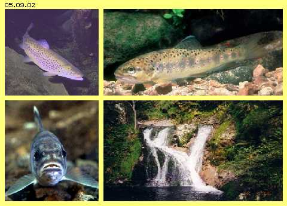
Hier jedoch geht es nur um Bewegung in der Welt der Teilchen, z.B. eines strömungsgünstigen Körpers (E in vorigem Bild), der sich durch ein teilchen-haftes Medium bewegt und aller Erfahrung nach Widerstand erfährt, also nur mittels Einsatz von Kraft sich fortgesetzt vorwärts bewegen kann. Paradox dazu scheinen einige ´Körper´ jedoch ohne erkennbaren Widerstand sich relativ zum Fluid bewegen zu können.
Unglaublich
Vielleicht war der eine oder andere auch schon erstaunt, dass hoch oben in Gebirgsbächen noch immer Fische vorhanden sind. Bachforellen stehen total ruhig in rascher Strömung und fliehen bei Gefahr blitzschnell - stromaufwärts (wie jeder leicht beobachten kann). Diese Fische kommen dort oben zur Welt, aber manche Arten (wie z.B. Lachse) wandern bis ins Meer - und wieder zurück, selbst über meterhohe Wasserfälle. Sie ´robben´ dabei nicht irgendwie um den Wasserfall herum oder ´fliegen´ durch die Luft darüber hinweg, nein, sie ´schwimmen´ durch den schnellen satten Strahl hindurch und hinauf (wie oftmals im Fernsehen gezeigt wurde).
Diese Fähigkeiten sind bekannt seit es ´Jäger und Angler´ gibt und jeder kann dieses ´Phänomen´ kennen seit einem dreiviertel Jahrhundert, als Viktor Schauberger diesen Sachverhalt exakt beschrieb und einen ´Forellen-Motor´ entwickelte (aber wohl nicht ganz zum Laufen brachte). Für mich ist wirklich phänomenal, wie gelassen Physiker (hier besonders der Bionik) diese paradoxe Erscheinung außer Acht lässt, anstatt zum Kern ihrer Forschungen zu machen, mit allen verfügbaren Resourcen. Also werde ich hier mit primitiven ´Bordmitteln´ einige Lösungsansätze aufzuzeigen.
Geschwindigkeit, Druck und Sog
Bild 05.09.03 zeigt eine Darstellung aus Lehrbüchern zur Beschreibung des obigen Paradoxon-d´Alembert. Ein runder Zylinder (grau) befindet sich in einer Strömung. Weit vor dem Zylinder, links bei A, weist die Strömung die Geschwindigkeit V1 auf (senkrechte Linie). Zum vordersten Punkt B des Zylinders wird die Strömung aufgestaut, womit theoretisch an diesem ´Staupunkt´ keine Bewegung gegeben ist (V0).
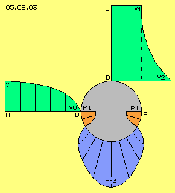
Seitlich vom Zylinder sind ebenfalls Geschwindigkeiten markiert, wobei weit außen bei C wiederum die Grund-Geschwindigkeit V1 gegeben ist (waagerechte Linie). Zum Zylinder hin ist die Strömung beschleunigt und erreicht direkt an dessen Oberfläche D eine ´Über-Geschwindigkeit´ V2, etwa doppelt so schnell wie die Grund-Geschwindigkeit.
Abhängig von der jeweiligen Geschwindigkeit lastet Druck auf der Oberfläche des Zylinders. Vorn am Staupunkt B existiert der Staudruck P1 (rot), im Quadrat korrelierend zur Grund-Geschwindigkeit. Weiter zur Seite weist das Wasser zunehmende Strömung auf, der statische Druck nimmt also nach außen hin ab. Die schnellste Geschwindigkeit herrscht seitlich am Zylinder, so dass dort Sogwirkung (blau) auftritt, jeweils radial zum Mittelpunkt des Zylinders, z.B. bei Punkt F in der Größenordnung P-3.
Bei ´unter-kritischer´ Geschwindigkeit sind der Strömungsverlauf und damit auch die Druckverhältnisse symmetrisch (wie hier skizziert), so dass z.B. auch hinten bei E wieder entsprechender Staudruck gegeben ist. Theoretisch würde dieser Zylinder fast (und eine Kugel vollkommen) widerstandsfrei in der Strömung stehen können. Sobald jedoch die Strömung kritische Geschwindigkeit erreicht, fließt Wasser hinten nicht mehr schnell genug zusammen, kann sich also nicht mehr aufstauen, der achterliche Vorwärts-Druck schlägt um in Rückwärts-Sog.
Motorische Umleitung
Die Druck- und Sog-Kräfte im vorderen Bereich aller gerundeten Körper gelten als ausgeglichen hinsichtlich ihres Widerstands in Strömungsrichtung, aber am achterliche Bereich ergibt sich Sog. Um dieses achterliche ´Fest-Saugen´ zu reduzieren, müssen die Flanken eines Körpers weiter nach hinten gezogen sein, womit der Körper ´strömungs-günstige´ Form erhält.
In Bild 05.09.04 ist ein solch strömungsgünstiger Körper A (grau) schematisch dargestellt, z.B. der Rumpf eines Flugzeugs. Er bewegt sich durch ruhende Luft nach links, so dass Staudruck B (rot) an seiner Frontseite entsteht. Seitlich davon herrscht beschleunigte Strömung und damit geringerer statischer Druck bzw. dieser Sog D, bis hin zum Ende C. Nach links weisender Sog ist blau, nach rechts (gegen die Bewegung) gerichteter Sog ist rot markiert.
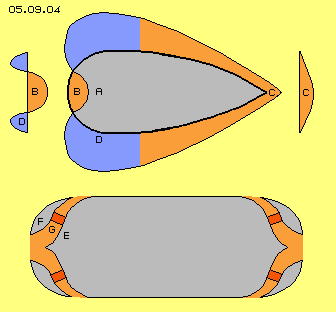
Die Sogkräfte wirken jeweils senkrecht auf die Oberfläche, d.h. ihre nach vorwärts bzw. rückwärts gerichteten Komponenten sind meist nur Bruchteile davon. Die Kräfte des vorderen Bereichs sind links dargestellt, rot der gegen die Bewegungsrichtung gerichtete Staudruck und blau die in Bewegungsrichtung weisenden Komponenten des Sogs. In etwa sind diese Kräfte des Bug-Bereichs ausgeglichen - oder könnten positiv gestaltet werden.
Unvermeidlich dagegen sind die nach rückwärts gerichteten Sogkräfte (rot), welche rechts mit ihren Komponenten gegen die Bewegungsrichtung dargestellt sind. Egal wie lang der Rumpf nach hinten gestreckt wird, das ´Fest-Saugen´ kann nicht auf null reduziert werden. Der eigentliche Widerstand eines strömungsgünstigen Körpers ergibt sich also nicht primär aus dem Staudruck am Bug, sondern durch Sog am Heck.
Aus meinen frühen Arbeiten zur Fluid-Technologie ist in diesem Bild 05.09.04 unten der Querschnitt eines Schiffrumpfes E (grau) skizziert. Der Staudruck am Bug F sollte abgebaut werden, indem Wasser (rot) durch Kanäle G nach außen gefördert wird mittels Propeller (dunkelrot). Auch am Heck könnten entsprechende Kanäle installiert sein, um das achterliche Festsaugen zu eliminieren. Dieses Schiff würde sehr gut zu manövrieren sein - aber diese Technik wäre nur einsetzbar unter ´ruhigen Bedingungen´, z.B. auf Binnengewässern.
Analog dazu habe ich z.B. vorgeschlagen, die Luft am Bug von Flugzeugen abzusaugen in den Einlass der Triebwerke und deren Auslass über den Tragflächen zu installieren. Gewiss würden diese Maßnahme den Widerstand reduzieren, aber die wirkliche Lösung muss eine andere sein - weil Forellen den Strömungswiderstand offensichtlich ohne motorische Leistung auf Null bringen bzw. sogar Vortrieb relativ zur Strömung erreichen.
Mechanischer Zug
In Bild 05.09.05 ist der Körper A der Forelle schematisch als ´strömungsgünstiges´ Profil skizziert. Die Forelle steht mit offenem Maul in der Strömung, so dass der Staudruck B (rot) auch innerhalb des Körpers anliegt. Blau markiert sind auch wieder die Bereiche des seitlichen Sogs D, welche bis zur Heckflosse C reichen.
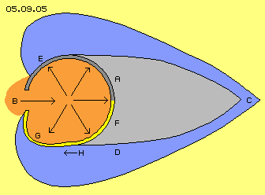
Innerhalb des Maul-Bereichs markieren die Pfeile, dass sich dieser Staudruck nach allen Seiten hin gleichförmig auswirkt. Dieser erhöhte Druck wirkt somit auch auf die obere Wand (dunkelgrau markiert), die in etwa der Innenseite einer Halbkugel entsprechen könnte. Hinten vom Körper A her ist normaler Gegendruck gegeben, vorn an diesem Viertel E einer Kugeloberfläche liegt außen aber der viel geringere Druck des Sogbereichs an. Wenn damit diese Staudruck-Innenkugel nach vorn gedrückt würde, ergäbe sich eine elegante Lösung des Paradoxons. ´Gar zu elegant?´ - diese Frage übergebe ich gern an Fachleute.
Alternativ dazu soll die untere Hälfte dieser Hohlkugel (gelb) aus elastischem Material bestehen. Von hinten bei F drückt auf diesen ´Ballon´ wiederum normaler Körperdruck, nach seitlich-vorn G jedoch würde diese elastische Wand zum Sog hin ausgebeult (wie z.B. die Plane bei Lastwagen). Diese Dehnung bewirkt Zug an den Befestigungspunkten, hier also beim Maul quer zur Strömung und an der Seite H in Vorwärtsrichtung. Stehen darum Forellen so ´elegant´ in der Strömung? Und ergänzende Frage an Fachleute: wirken diese Zugkräfte nicht auch analog beim stabilen Material der oberen Hälfte?
Coanda plus Magnus
Staudruck ist insofern positiv, als damit eine Kraft in Erscheinung tritt. Mit vorigem Lösungsansatz wird diese Kraft aber nur statisch verwertet, was den besonderen Eigenschaften der Fluide nicht gerecht wird. Erstaunliche und höchst wirksame Effekte kommen nur aus Strömungen zustande, wie z.B. oben erwähnter Coanda- sowie Magnus-Effekt.
In Bild 05.09.06 ist nur der vordere Teil des Körpers A dargestellt. Rot sind Bereiche des Staudrucks (bzw. langsamer Strömung) und blau sind Bereiche des Sogs (bzw. schnellerer Strömung) markiert. Zuerst soll die Darstellung links im Bild diskutiert werden.
Der Staudruck B dringt durch das Maul in den Körper ein. Der Rand des Mauls C ist gerundet, so dass (gemäß Coanda) die Strömung D zur Seite hin umgelenkt wird. Diese Querströmung fließt anschließend entlang einer wiederum gerundeten Oberfläche E, so dass die Strömung F nach außen-hinten umgelenkt wird. Diese mündet durch Schlitze in die Strömung entlang der Außenseite bzw. wird sogar nach außen gesaugt.
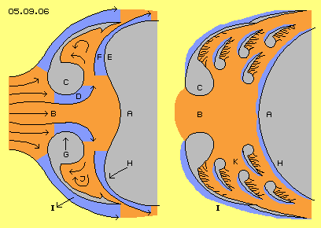
Zugleich mit der Umlenkung wird die Oberfläche zur jeweiligen Strömung hin gedrückt (gemäß Magnus). Am Maul C treten damit Kräfte G in zentripetale Richtung auf, also neutraler Art. An der zweiten Krümmung jedoch wird die Oberfläche H nach vorn gezogen. Durch diese doppelte Umlenkung wird also statischer Staudruck in dynamische Vortriebskraft umgesetzt. Hinter der Rundung des Mauls ergibt sich turbulente Strömung J, welche von innen höheren Druck auf die ´Backe´ I ausübt, während außen in diesem Sogbereich geringer statischer Druck anliegt.
Der Staudruck wirkt im Innern damit nicht mehr nur als ´ruhendes´ Wasser. Aus diesem Bereich hoher Dichte wird vielmehr Strömung produziert, welche unterstützt wird durch den Sog am Auslass dieses ´Kanals´. Durch geschickte Führung werden Strömungen unterschiedlicher Geschwindigkeit organisiert und aus diesen Differenzen wird Kraft in Vorwärtsrichtung generiert.
Multiplikation wirksamer Fläche
In diesem Bild rechts ist schematisch nun die Grund-Konstruktion des ´Salmon-Vortriebs-Motors´ skizziert. Es sind wiederum nur der vordere Teil des Körpers A dargestellt und die anderen Elemente entsprechend gekennzeichnet. Als zusätzliches ´Bau-Element´ sind hier Kiemen K schematisch eingezeichnet.
Fische haben Kiemen seitlich innen im Kopf, durch welche sie den im Wasser gelösten Sauerstoff aufnehmen (und anschließend dieses Wasser seitlich durch Schlitze abfließt). Generell müssen Kiemen (analog zu Lungen) große Oberfläche aufweisen, z.B. durch baumartige Verzweigungen. Ich hab noch nie einem lebendigen Fisch ins Maul geschaut, bin aber ziemlich sicher, dass die spezielle Fähigkeit der Bachforellen und Lachse auf einer speziellen Form ihrer Kiemen basiert (wie auch Viktor Schauberger vermutete).
Im Prinzip werden diese Kiemen-Bäume und -Äste an ihrer vorderen Seite jeweils relativ glatte Oberfläche aufweisen, während nach hinten eine unebene Oberfläche gegeben ist, z.B. wie hier durch kleine Äste oder ´Haare´ skizziert ist. Entlang der glatten Vorderseite herrscht schnelle Strömung, während jeweils an der Hinterseite vielfache Turbulenz mit entsprechend hohem statischen Druck existiert. Aus Druck-Differenz resultiert ´Sog´ in Vorwärtsrichtung (hier jeweils blau markiert). Vermutlich sind Kiemen dieser Grund-Struktur fraktal aufgebaut, so dass im gegebenen Raum diese Sog-Komponenten an sehr großer Gesamtfläche wirksam werden.
Lebewesen sind aus Material nahezu beliebiger Elastizität aufgebaut und darum sind erfolgreiche Prinzipien der Natur oft nur schwer zu erkennen und nur selten durch völlig identische Technik zu imitieren. Das Grundprinzip der Forellen zur Egalisierung des Strömungswiderstands und zur Generierung von Vortrieb scheint mir eindeutig: Multiplikation der einer Strömung ausgesetzten Fläche und Organisation interner Strömungen dergestalt, dass jeweils an Vorderseiten höhere Geschwindigkeit als an Hinterseiten existiert. Dieses Prinzip lässt sich gewiss in vielfältiger Weise technisch nachbilden.
Prinzipien technischer Umsetzung
Als Beispiel soll nun ein Flugzeug-Rumpf dienen, der sich nach links in ruhender Luft bewegt. Das Grundprinzip technischer Umsetzung ist in Bild 05.09.07 schematisch dargestellt. Der vor dem Rumpf A existierende Staudruck B muss durch eine Öffnung in einen Bereich innerhalb des Körpers eindringen können. Die Strömung in einem Kanal C zwischen Rumpf A und vorderem Körperteil D muss an gekrümmten Flächen umgelenkt werden und seitlich am Körper abfließen. Einerseits wird also Luft per Staudruck in die Kanäle gedrückt, andererseits wird diese Luft aus den Kanälen abgesaugt durch die Strömung entlang der Außenseite des Rumpfes.
Im vorigen Kapitel wurde breite Form von Rümpfen, quer zur Bewegungsrichtung, als vorteilhaft bezeichnet. Bei rundem Rumpf würden die Kanäle radial auseinander laufen, also immer breiter werden. Bei diesem Segment (links) eines breiten Rumpfes behalten die Kanäle (z.B. zwischen zwei Spanten) immer gleiche Breite, so dass der Staudruck bzw. die daraus resultierende Strömung gleichförmig zu verwerten ist.
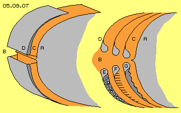
In diesem Bild rechts-oben ist die Umlenkung an zwei gekrümmten Flächen aus vorigem Bild nochmals wiederholt, hier jedoch die Oberflächen durch drei Kanäle C vergrößert. Das allein wird nicht ausreichen, weil zu geringe Geschwindigkeitsdifferenzen an den jeweiligen Rück- und Vorderseiten auftreten. Als ´Rückseite´ wird hier die zum Heck weisende Oberfläche, als ´Vorderseite´ die zum Bug schauende Oberfläche bezeichnet. In diesem Bild rechts-unten sind drei Möglichkeiten zur Verzögerung der Strömung an Rückseiten skizziert.
Bei E sind Bleche an der Rückseite installiert, waagerecht und senkrecht, versehen mit Löchern, so dass Luft entlang der Oberfläche nicht ungehindert fließen kann. Durch die langsame Strömung bzw. Turbulenzen lastet relativ hoher Druck auf dieser Oberfläche (und schieb damit das Flugzeug nach vorn). Diese Technik verlangt vermutlich großen Abstand zur nächsten Vorderseite, so dass sie hier nicht optimal sein dürfte.
Bei F ist eine Konstruktion dargestellt, die vorigen ´Kiemen-Haaren´ nahe kommt: die gesamte Rückseite ist wie ein ´Nagelbrett´ gestaltet, d.h. viele runde Stifte ragen aus der Oberfläche heraus, so dass Luft sich dort sehr wohl bewegen kann, jedoch nur langsam und turbulent. Vermutlich wären elastische Elemente (wie langhaarig rauher Pelz oder Gefieder) sehr geeignet, um hohen statischen Druck an den Rückseiten der Kanäle zu erreichen.
Bei G ist eine technisch einfache Konstruktion skizziert, indem diese Rückseite wellenförmig gestaltet ist. Darüber hinweg streichende Luft kommt nicht in gleichförmig laminare Strömung, sondern wird immer wieder Turbulenz aufweisen. In jedem Fall also müssen die Vorderseiten der Kanäle möglichst glatte Oberflächen aufweisen, während die Rückseiten strömungs-hemmend beschaffen sein müssen.
Dellen und glatte Flächen
Vorige Bilder sind rein schematische Darstellungen und zu ´makroskopisch´. Gewiss braucht Fluid immer genügend Spielraum, beispielsweise müssen Rohre bzw. hier die Kanäle ausreichend dimensionierte Durchmesser aufweisen. Sonst wird das System selbstsperrend und Strömung verhindert. Andererseits zeigen gerade diese Kiemen, dass der Effekt nur erreicht wird durch enorme Vergrößerung der Ober-flächen - von mikroskopisch kleiner Strukturen. Hier ist vorteilhaft, dass Strömung einerseits durch Druck und andererseits durch Sog zustande kommen kann, also müsste auch eine Lösung durch relativ enge Kanäle machbar sein.
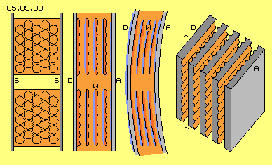
In Bild 05.09.08 ist vorige ´Rückwand mit Wellen´ etwas detaillierter dargestellt, wobei die Wellen hier durch kleine Dellen ersetzt sind. Links im Bild ist die Sicht auf eine Rückseite W dargestellt, die zwischen zwei Spanten S gehalten wird. Die Kreise darin repräsentieren runde Dellen bzw. auch ein Wabenmuster wäre geeignet. Die Luft strömt von unten nach oben an diesen Vertiefungen entlang und es wird nur turbulente Bewegung zustande kommen.
Rechts daneben ist ein Querschnitt dargestellt und es sind vier Wände W zwischen der Rumpf-Vorderseite D und der Rumpf-Innenwand A eingezeichnet. Jede Rückseite weist dieses Dellen-Muster auf (auch die rechte Seite der Rumpf-Außenwand D). Jede Vorderseite ist möglichst glatt (auch die linke Seite der Rumpf-Innenwand A). Die Strömungen fließt ungehindert entlang der glatten Oberflächen, so dass sich jeweils Sog ergibt (blau markiert) bzw. die Differenz statischen Drucks das Flugzeug nach vorn schiebt.
Rechts davon ist dieser Querschnitt noch einmal skizziert, wobei das gesamte ´Sandwich´ dieser Wände gekrümmt ist entsprechend zur Kontur der Rumpf-Außenseite. Durch die einzelnen Kanäle sollen Strömungen fließen, die an beiden Oberflächen vollkommen unterschiedlichen Charakter hat. Die laminare Strömung an den Vorderseiten kann aber nicht unbegrenzt erhalten bleiben, sondern wird nach einer Distanz von etwa zehn- bis fünfzehn mal der Breite des Kanals ebenfalls turbulent werden. Darum ist hier die Länge der ´Sandwich-Blöcke´ begrenzt und vor dem nächsten Block ein freier Zwischenraum eingezeichnet.
Rillen längs und quer
In Bild 05.09.08 ganz rechts ist in diagonaler Sicht ein Sandwich-Block skizziert, der einerseits einfach zu fertigen und andererseits sehr vorteilhaft sein dürfte. Die Luft strömt wieder von unten nach oben durch die Kanäle, jede Rückseite ist mit Rillen quer zur Strömung versehen, jeder Vorderseite mit Rillen in Strömungsrichtung, jede Zwischenwand weist also einerseits Quer- und andererseits Längsrillen auf.
An den Rückseiten herrscht turbulente Strömung, weil die Querrillen keine kontinuierliche Bewegung zulassen. An den Vorderseiten dagegen wird die Strömung besonders gut fließen, weil die Längsrillen gegen seitliche Störung schützen (wie man auch an Tragflächen mit kleinen Längsrillen feststellen konnte). Allerdings sollten auch diese Kanalblöcke nur begrenzte Länge und Abstand zum folgenden Block aufweisen, so dass sich das günstige Strömungsmuster immer wieder neu bilden kann. Prinzipiell wird laminare Strömung an gekrümmten Oberflächen länger anliegen, so dass gekrümmte Sandwich-Blöcke etwas länger sein können (wobei natürlich die Krümmung immer aus der Strömungsrichtung zurück weichen muss).
Anordnungs-Beispiel
In Bild 05.09.09 links ist wiederum der Bug eines Rumpfes A dargestellt inklusiv des davor angeordneten Körperteils D, dazwischen die Kanäle C. Am Bug liegt Staudruck B an, so dass Luft durch die Kanäle gedrückt wird (bzw. auch seitlich abgesaugt wird). Oben in dieser Darstellung sind vorige Sandwich-Blöcke (dunkelrot, jeweils mit Abstand dazwischen) entlang der Krümmung des Bugs angeordnet.
Unten in dieser Darstellung ist skizziert, dass der Staudruck auch weiter in den Rumpf hinein zu führen ist, so dass Kanäle bzw. Sandwich-Blöcke E auch seitlich nebeneinander anzuordnen sind. In jedem Fall herrscht in diesem Einlassbereich erhöhter Druck bzw. relativ hohe Dichte, aus welcher Luft zur Seite hin in die Kanäle gedrückt wird. Der Einlass der Kanäle ist gestaffelt angeordnet. An jeder vorspringenden Fläche lastet aber nicht der volle Staudruck, weil dieser auch dort schon durch diese Querströmung reduziert ist.
Zur Vergrößerung der wirksamen Fläche sind diverse Möglichkeiten geboten. Theoretisch müsste diese Technik auch mit Rillentiefe und Wandabständen in Mikrometern funktionieren. Andererseits wird auch Luft unter Druck relativ ´dickflüssig´ und Schmutzpartikel in der Luft könnten die Kanäle verstopfen. Eine praktikable Größenordnung wird bei einigen Millimeter bis Zentimeter liegen.
Daten-Beispiel
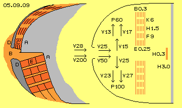
In Bild 05.09.09 rechts sind einige Daten beispielhaft eingezeichnet, oben für die Start- und unten für die Flugphase. In der Startphase ist das Flugzeug z.B. nur 100 km/h schnell, bewegt sich also mit rund 28 m/s (V 28) relativ zur ruhenden Luft bzw. mit dieser Geschwindigkeit kommt Luft zum Einlass. In diesem Bereich wird die Strömung verzögert, z.B. auf 25 m/s (V 25). In die relativ engen Kanäle fließt (hier nach oben) die Luft nochmals langsamer hinein, z.B. mit 15 m/s (V 15).
Es wird unterstellt, dass an den quer-gerippten Rückseiten eine Geschwindigkeit von nur 13 m/s anliegt, an den längs-gerippten Vorderseiten dagegen 17 m/s (V 13 bzw. V 17). Die Differenz der kinetischen Energie beider ´Teilströme´ ergibt rund 60 Pa bzw. 60 kg/ms^2 bzw. 60 N/m^2 (P 60). Entsprechend dazu verhalten sich die statischen Drücke bzw. deren Differenz an Rück- und Vorderwand.
Es sind hier sechs Kanäle (K 6, rote Linien) angelegt, wobei eine Wand etwa 1 cm und der Abstand zwischen den Wänden etwa 4 cm breit sind. Der Einlass in die Kanäle insgesamt ist damit rund 25 cm (E 0.25) und das Bauelement insgesamt etwa 30 cm (B 0.3) breit. Der Rumpf soll etwa 3 m hoch sein (H 3.0, grau), die effektiv nutzbare Höhe der Sandwich-Blöcke aber nur 1.5 m (H 1.5). Ein Segment von 1 m Breite ergibt somit 6 * 1.5 = 9 m^2 effektive Fläche (F 9). Auf diese Gesamtfläche wirken obige 60 N/m^2 * 9 m^2 = 540 N als Vortriebskraft.
In der unteren Hälfte dieser Darstellung sind Daten der Flugphase angeführt. Die Reisegeschwindigkeit ist 720 km/h bzw. 200 m/s (V 200). Von der angestauten Luft sollen nur Teilmengen mit etwa 50 m/s (V 50) in den Einlassbereich eindringen. In den Kanälen selbst wird mit noch geringerer Geschwindigkeit von nur 25 m/s (V 25) gerechnet. Wenn wiederum die Strömungen an Rück- und Vorderseite der Kanäle nur um +/- 2 m/s differieren, also 23 m/s bzw. 27 m/s (V 23 und V 27) aufweisen, ergibt sich eine Druckdifferenz von 100 N/m^2 (P 100). Bezogen auf obige 9 m^2 Gesamtfläche ergibt sich Beschleunigungskraft von rund 900 N.
Schub nach Bedarf
Diese Schubkraft von 900 N ist natürlich sehr bescheiden z.B. im Vergleich zur A380, die mit mehr als 300 kN gestartet wird. Dort wurden zum Auftrieb an Tragflächen die Geschwindigkeiten und Drücke je Kubikmeter Luft diskutiert. In Bild 05.09.13 sind analoge Darstellungen und Daten aufgezeigt, hier nun zum Forellen-Vortrieb.
Bei A ist ein ´Kanal´ von 1 m Länge und 1 m^2 quadratischem Querschnitt skizziert. Wenn darin keine Strömung gegeben ist, lastet der normale atmosphärische Druck auf allen Seitenflächen gleichförmig. Wenn durch diesen Kanal die Luft hindurch fließt (hier von unten nach oben), ergibt sich oben ein erhöhter dynamischer Druck und auf die Seitenflächen ein entsprechend geringerer statischer Druck. Bei stärkerer Strömung ist der dynamische Druck nochmals stärker und der statische Druck nochmals geringer (siehe Pfeile bei A und B). Wenn dieser große Kanal in zehn engere Kanäle von jeweils 10 cm Breite unterteilt wird, lastet der statische Druck auf der zehnfach größeren Fläche der Zwischenwände.
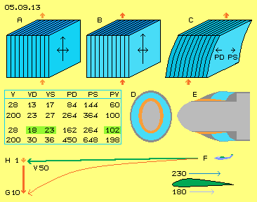
Wichtig ist nun, dass die Kanäle gekrümmt sind, wie bei C skizziert ist. Schon dadurch ergibt sich eine Differenz der Fließgeschwindigkeiten: die Strömung prallt auf die konkaven (Druck-) Flächen, es ergibt sich Reibung und reduzierte Strömung. Entlang der konvexen (Sog-) Flächen kann die Luft fort-während in relative Leere fallen, womit eine geordnete und beschleunigte Strömung erreicht wird. Zusätzlich sollten die Flächen einerseits rau und andererseits möglichst glatt sein. Dann ergibt sich ein erhöhter Druck an den (Druck-) Hinterseiten und reduzierter Druck an den (Sog-) Vorderseiten (siehe Pfeile PD und PS bei C).
In der Tabelle ist der dynamische Druck wieder nach Formel P=0.5 * m*rho*v^2 ermittelt, je nach Geschwindigkeit an den Druck- und Sog-Seiten (VD und VS). Aus der Druck-Differenz zwischen Druck- und Sogseite (PD und PS) ergibt sich der Vorschubs-Druck (PV), in den oberen Zeilen mit obigen 60 N/m^2 und 100 N/m^2.
Diese Kanäle sind nun mit rund 10 cm ausreichend breit, um erhöhten Durchsatz zu erlauben. Zugleich könnte damit die Differenz der Geschwindigkeiten größer sein, z.B. beim Start schon mit 18 und 23 m/s (siehe dritte Zeile). Dann ergibt sich dort schon ein Schub von 102 N/m^2. Bei hoher Reisegeschwindigkeit (vierte Zeile) könnte Luft mit 30 und 36 m/s fließen und eine Schubkraft mit 198 N/m^2 ergeben.
Der insgesamt verfügbare Schub ergibt sich aus der verfügbaren Gesamt-Fläche. Bei der A380 ist der Rumpf-Querschnitt etwa 80 m^2, davon könnten z.B. 50 m^2 für den Forellen-Vortrieb genutzt werden. In Bild 09.05.13 ist mittig rechts schematisch ein Querschnitt (D) und ein Längsschnitt (E) skizziert. Das Cockpit (hellgrau) könnte mittig installiert sein, der ringförmige Einlass für den Staudruck ist rot markiert. Die Vortriebsfläche (blau) bildet einen Ring von etwa 50 m^2, der Abfluss erfolgt außen durch ´Kiemenschlitze´ am Rumpf (dunkelgrau).
Auf einer Länge von z.B. 3 m könnte man 25 Kanäle installieren, womit sich eine wirksame Fläche von 50 * 25 = 1250 m^2 ergibt (weit mehr als die Fläche der Tragflügel). Bei rund 100 N/m^2 ergäbe sich ein Schub von insgesamt 125 kN - oder auch bei 200 N/m^2 das Doppelte mit 250 kN. In großer Höhe bei geringer Dichte sind das aber wiederum nur etwa 100 kN. Damit kann das Flugzeug völlig autonom über den Atlantik fliegen. Die Triebwerke sind nur noch zur Beschleunigung beim Start erforderlich. Das Startgewicht ist weit geringer, weil nur noch halb so viel Treibstoff zu tanken ist. Ganz nebenbei fliegt dieser Flieger erstaunlich leise.
Ein Zehntel für den Vortrieb
In diesem Bild 09.05.13 ist unten ein Segelflugzeug F skizziert, das sich mit 50 m/s nach links bewegt. Ohne die Kraft des Auftriebs würde es abstürzen aufgrund der Gravitationsbeschleunigung von rund 10 m/s^2 (rote Kurve von F nach G). Dieser Segler ist sehr strömungsgünstig gebaut, dennoch wird er durch den Luft-Widerstand abgebremst, wird langsamer mit entsprechend geringerem Auftrieb. Um den Luftwiderstand zu egalisieren muss sich der Flieger auf einer ´schiefen Ebene´ abwärts fallen lassen (siehe Linie von F nach H), z.B. einen Meter Höhe verlieren auf 50 m Distanz (Gleitzahl 1:50). Ein Zehntel der Erdbeschleunigung, hier 1 m/s^2, sind in diesem Fall erforderlich, um die Fluggeschwindigkeit konstant zu halten.
Rechts unten ist die Trägfläche skizziert. Unten entlang streicht die Luft mit vorigen 50 m/s = 180 km/h an der Tragfläche vorbei. An der Oberseite wird ein ´künstlicher Wind´ von etwa 50 km/h generiert. Die Luft streicht also mit etwa 230 km/h über die Tragfläche. Bei sehr überschlägiger Betrachtung müsste in den Vortriebskanälen eine Relation von 18 zu 23 m/s erreicht werden (grün markiert in der Tabelle). Diese etwa 100 N/m^2 wären ausreichender Vortrieb, sofern er an einer großen Fläche wirken kann, mindestens entsprechend zu den Tragflügeln.
Segeln gegen den Wind
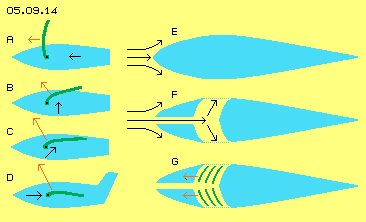
In Bild 05.09.14 sind links Segelschiffe skizziert und bekannte Sachverhalte dargestellt. Bei A weht der Wind (schwarzer Pfeil) von achtern, das Segel (grün) steht querab, der Vortrieb (roter Pfeil) schiebt das Schiff gegen den Widerstand im Wasser vorwärts, etwas langsamer als der Wind bläst. Bei B weht der ´wahre Wind´ von der Seite. Zusammen mit dem Fahrtwind ergibt sich ein ´scheinbarer Wind´ von schräg-vorn. Dessen schnellere Luftströmung erzeugt am Segel eine größere Kraft. Die anteilige, vorwärts gerichtete Komponente treibt das Schiff schneller voran. Bei ´vorlichem Wind´ (bei C) werden am Segel noch stärkere Kräfte wirksam. Das Schiff ´krängt´ aufgrund des seitlichen Drucks, läuft aber vorwärts mit viel höherer Geschwindigkeit als der des originären wahren Winds.
Die Oberseite einer Tragfläche (bei D) wirkt wie ein Segel, bei dem der Fahrtwind direkt von vorn anliegt. Der Auftrieb (etwas nach vorn-aufwärts gerichtet) kommt ausschließlich zustande aufgrund der beschleunigten Luftströmung über der Fläche. Motorische Kraft ist nur erforderlich zur Generierung des Fahrtwindes.
Im Bild rechts ist bei E ein Querschnitt durch die strömungs-günstige Form eines Flugzeug-Rumpfes skizziert. Wenn dieser Körper durch ´ruhende´ Luft geschoben wird, ergibt sich ein Staudruck am Bug. Letztlich aber fließt alle Luft seitlich entlang des Rumpfes nach hinten. Es ergibt sich kein wesentlich größerer Widerstand, wenn man den Staudruck ins Rumpf-Innere eindringen lässt und die Luft erst dann in seitlichen Kanälen nach außen abfließen lässt (wie bei F skizziert ist).
Wenn in diesen schräg nach hinten weisenden Kanälen nun ´Segel gesetzt´ werden, ergibt sich nach vorwärts gerichteter Auftrieb, d.h. Vortrieb für diesen Rumpf (wie bei G angezeigt ist). Es müssen Wände aus geeignetem Material und zweckdienlicher Form mit möglichst großer Oberfläche installiert werden. Dann wird dieser Rumpf direkt gegen den Wind ´segeln´ und (zumindest teilweise bis weitgehend) den erforderlichen Fahrtwind autonom erzeugen.
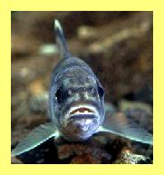
Das klingt natürlich unglaublich - aber genauso macht es die Forelle: sie steht bewegungslos in der Strömung, um bei Gefahr blitzartig gegen die Strömung ins Versteck zu flüchten. Oder sie beschleunigt im Gumpen unter einem Wasserfall und ´fliegt´ meterhoch hinauf. Nur Forellen und Lachse sind offensichtlich fähig, den Strömungsdruck in Vortrieb (relativ zur Strömung) umzusetzen. Fachleuten der Strömungstechnik und besonders der Luft- und Raumfahrt sollten diese Herausforderung angehen und werden fähig sein, dieses Prinzip technisch zu realisieren.
Einigen Studenten und Mitarbeitern des Fachbereichs der Luft- und Raumfahrt an der Universität Stuttgart ist Ähnliches schon gelungen: auf einem simplen Fahrzeug wurde ein Propeller (bzw. ´Windrad´) montiert, das autonom Vortrieb aus dem Fahrtwind generierte. Das Gerät erfordert manuellen Anschub nur beim Start und bewegt sich dann fortwährend weiter (lat. ´perpetuum mobile´). Das ist nach gängiger Lehre unmöglich (und darum ist die Dokumentation dieses gelungenen Experiments kaum mehr zu finden in der Literatur).
Diese Prozesse verletzen aber keinesfalls die Energie-Konstanz: nur zeitweilig wird die Energie molekularer Bewegung so organisiert, dass sich ein brauchbarer Neben-Effekt ergibt. Genau das bewirkt das Prinzip des Forellen-Motors, auf direkte Weise, ohne bewegliche Teile, nur aufgrund der Formgebung von Wänden und der Organisation zweckdienlicher Strömungen.